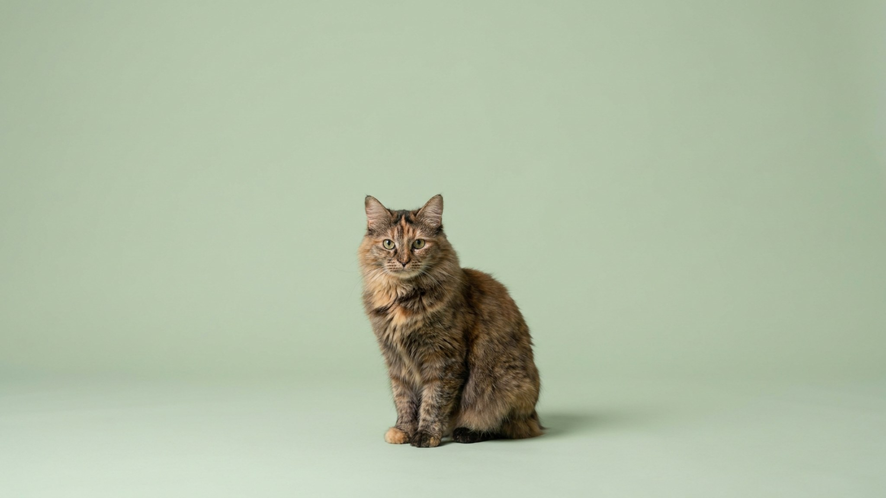

Мэнкс прыгает на холодильник — и не падает, хотя хвоста почти нет. У других кошек хвост участвует в балансировке: мэнкс решил эту задачу иначе, перестроив всю заднюю часть тела. Это порода с острова Мэн, которую столетиями держали для охраны зерновых складов, — и тот охотничий характер никуда не делся. Ниже — чем мэнкс отличается от других кошек, как с ним жить и кому он действительно подойдёт.
🐾 Всё о вашем питомце — в одном приложении
AI-ветеринар, дневник, напоминания о прививках и уходе. Установите AnimaLife — это бесплатно, в Telegram и MAX.
У большинства кошек хвост — это руль: они используют его при прыжках, беге и приземлении. Мэнкс компенсирует его отсутствие за счёт укороченного позвоночника и мощных задних лап, которые заметно длиннее передних. Из-за этого силуэт породы напоминает кролика: высокий круп, округлые бёдра, «подпрыгивающая» походка. Прыгает мэнкс высоко и точно — задние лапы дают хорошее ускорение. Приземляется уверенно: тело выработало собственную систему баланса, не завязанную на хвост.
Хвост у мэнксов бывает разной длины: от полного отсутствия («румпи») до почти нормального («лонги»). Это важно при выборе котёнка — спросите заводчика об особенностях конкретной линии.
Мэнкс — порода с выраженной привязанностью к одному человеку или семье. Он не держится на расстоянии и не игнорирует хозяина: следует по квартире, встречает у двери, реагирует на своё имя. При этом к чужим — сдержан, не агрессивен, но без лишней доверчивости. Охотничий инстинкт силён: игрушки-«мышки» и интерактивные удочки будут в ходу годами. Несколько особенностей характера:
🐾 Спросите AI-ветеринара прямо сейчас
AnimaLife — приложение, где AI-ветеринар отвечает на вопросы о кошке или собаке 24/7. Бесплатно, без записи и очередей.
🐾 Понравился разбор?
Подпишитесь на канал — каждый день разбираем по одному тревожному симптому у кошек и собак: что в пределах нормы, а когда пора к врачу. Подпишитесь, чтобы не пропустить разбор, который может спасти здоровье вашего питомца.
Мэнкс бывает короткошёрстным и полудлинношёрстным (последний иногда называют кимрик). Короткошёрстный требует расчёсывания раз в неделю, кимрик — 2–3 раза. В период линьки — чаще. Купать нужно редко: порода чистоплотная и ухаживает за собой сама.
Физическая активность — обязательна. Мэнкс не диванная кошка: без нагрузки он начинает придумывать себе развлечения за счёт мебели и штор. Минимум две активные игровые сессии в день по 10–15 минут. Когтеточек нужно несколько — порода метит территорию когтями охотно. Особенности строения позвоночника у бесхвостых кошек бывают разными — о том, на что обращать внимание при регулярных осмотрах, расскажет ветеринар при первом визите.
Мэнкс хорош для тех, кто хочет активную, умную кошку с собачьей лояльностью к хозяину. Он подойдёт семьям с детьми и в доме, где уже есть собака: мэнкс не пасует и быстро выстраивает иерархию. Не подойдёт тем, кто ищет независимую кошку, которую достаточно кормить: мэнкс требует внимания и общения каждый день. Также не лучший выбор для людей с плотным графиком без возможности вернуться домой хотя бы раз в середине дня — или без второго питомца в компанию.
Порода редкая: хорошего заводчика придётся поискать. Это плюс — серьёзный заводчик даст полную информацию об особенностях конкретного котёнка и поможет с первыми вопросами по уходу.
Материал носит информационный характер и не заменяет очную консультацию ветеринара.